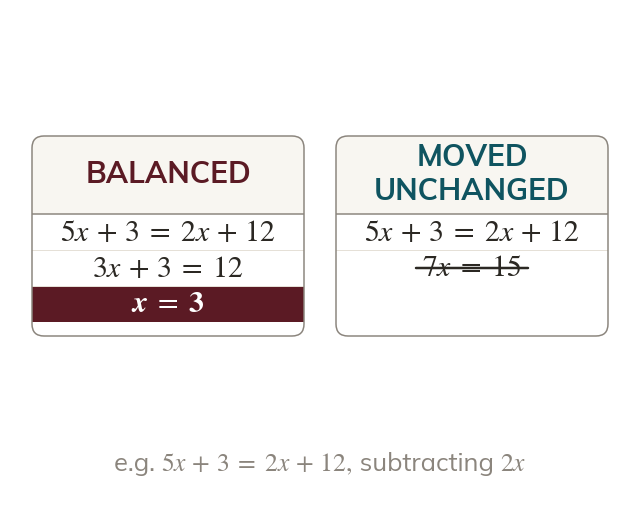

Same move on both sides
A term is removed by doing its inverse to both sides. Taking the smaller x term keeps the coefficient positive.
A term on the other side is removed by doing its inverse to both sides, never by moving it unchanged. Taking away the smaller x term keeps the coefficient positive.